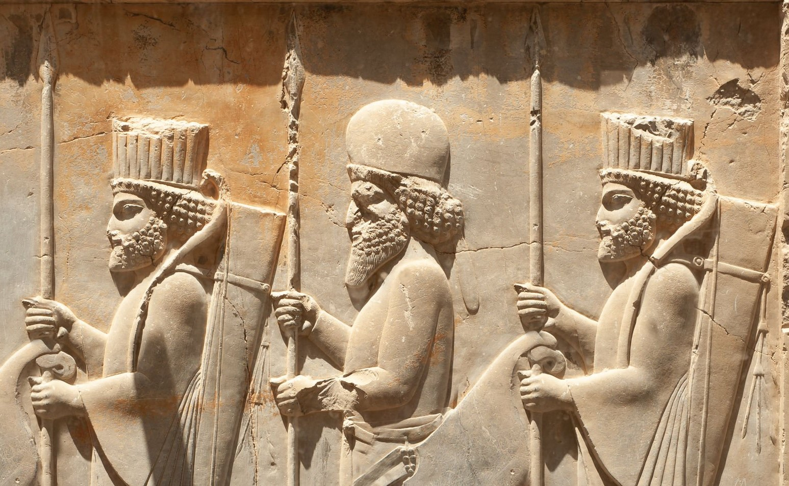
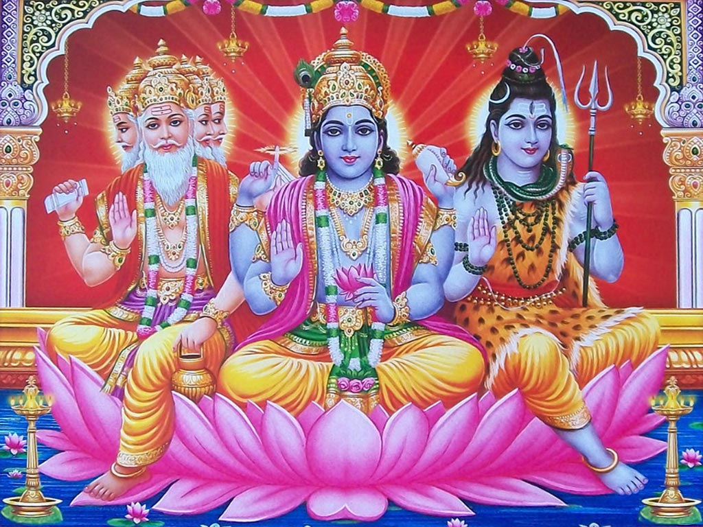
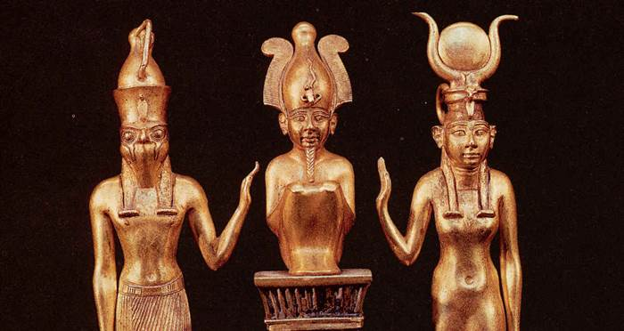
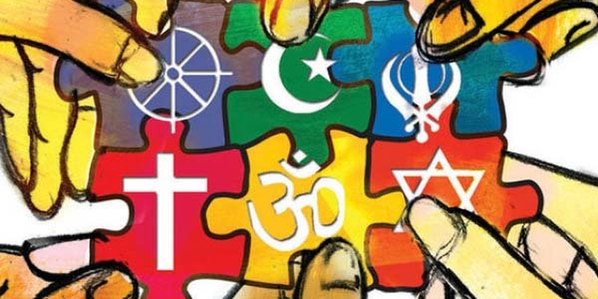

Suméria
“O universo foi dividido em três regiões cada uma dos quais tornou-se o domínio de um deus. Anu regia o céu. A terra foi dada a Enlil. Ea se tornou o governante das águas. Juntos, eles constituem a tríade dos Grandes Deuses”
Índia
Os Puranas, uma das bíblias hindu de mais de três mil anos atrás, contém a seguinte passagem: ‘Ó três Senhores! sabes que eu reconheço um só Deus. Dizei-me, portanto, qual de vós sois a verdadeira divindade, para que eu possa recorrer somente a ele em minha adorações’. Os três deuses, Brahma, Vishnu e Shiva [ou Siva], tornando-se manifesto a ele, responderam: ‘Aprendei, Ó devoto, que não há distinção real entre nós. O que lhe surge é somente a semelhança. O único ser aparece sob três formas pelos atos de criação, preservação e destruição, mas ele é um só Por isso, o triângulo foi adotado por todas as nações antigas como um símbolo da Divindade . . . O três foi considerado entre todas as nações pagãs como o principal dos números místicos, porque, como Aristóteles observou, ele contém dentro de si um começo, um meio e um fim. Por isso achamos que ele designa alguns dos atributos de quase todos os deuses pagãos
Egito
O Hino a Amon ordena que ‘Nenhum deus surgiu antes dele (Amon)’ e que ‘Todos os deuses são três: Amon, Ré e Ptah, e não existe um segundo a eles. Oculto é o seu nome como Amon, ele é Ré na face, e seu corpo é Ptah’... Esta é uma declaração de trindade, os três principais deuses do Egito agrupados em um deles, Amon. Claramente, o conceito de união orgânica dentro da pluralidade alcançou um impulso extraordinário com esta formulação. Teologicamente, de uma forma tosca e surpreendente isso se aproxima da posterior forma cristã de monoteísmo trinitário plural Outras Religiões
O egiptólogo Arthur Weigall, enquanto ele próprio um trinitário, resumiu a influência das crenças antigas sobre a adoção da doutrina da trindade pela Igreja Católica no seguinte trecho de seu livro, já citado: “Não se deve esquecer que Jesus Cristo nunca mencionou tal fenômeno [a trindade], e em nenhum lugar do Novo Testamento a palavra ‘trindade’ aparece. A ideia só foi adotada pela Igreja trezentos anos após a morte de nosso Senhor; e a origem deste conceito é inteiramente pagã Os antigos egípcios, cuja influência sobre o pensamento religioso primitivo era profunda, geralmente organizavam seus deuses ou deusas em trindades: Havia a trindade de Osíris, Isis e Hórus, a trindade do Amen. Os primeiros cristãos, no entanto, no início não pensaram em aplicar essa ideia em sua própria fé. Eles prestavam suas devoções a Deus Pai e Jesus Cristo, o Filho de Deus, e reconheciam a existência misteriosa e indefinida do Espírito Santo, mas não havia nenhum pensamento destes três serem uma trindade real, co-iguais e unidos em Um. A aplicação desse antigo conceito pagão da trindade na teologia cristã foi possível graças ao reconhecimento do Espírito Santo como a necessária terceira ‘Pessoa’, co-igual com as outras ‘Pessoas. A ideia do Espírito sendo não foi plenamente reconhecida até a segunda metade do século IV d.C. . . . No ano 381 do Concílio de Constantinopla acrescentou ao Credo Niceno anterior uma descrição do Espírito Santo como ‘o Senhor e doador da vida, que procede do Pai, que com o Pai e o Filho é adorado e glorificado. Assim, o credo atanasiano, composto mais tarde, que reflete os conceitos gerais de Atanásio [o trinitário do quarto século, cuja opinião se tornou doutrina oficial] e sua escola, formulou o conceito de um Espírito Santo co-igual e trinitário onde ele era a terceira ‘pessoa’, e assim foi criado o dogma. Hoje, um pensador cristão a definição é obviamente pagã em sua origem e não foi adotada pela Igreja até quase trezentos anos depois de Cristo James Bonwick resumiu bem a história na página 396 de sua obra de 1878, A Crença Egípcia e o Pensamento Moderno: “É um fato inquestionável que mais ou menos em todo o mundo as deidades são apresentadas em tríades. Esta regra aplica-se aos hemisférios oriental e ocidental, ao norte e sul. Além disso, observa-se que, de alguma forma mística, a tríade de três pessoas é uma delas. A primeira é como o segundo ou o terceiro, o segundo como o primeiro ou o terceiro, o terceiro como o primeiro ou o segundo; na verdade, eles estão uns nos outros, e um mesmo ser individual. A definição de Atanásio, que viveu no Egito, aplica-se às trindades de todas as religiões pagãs
